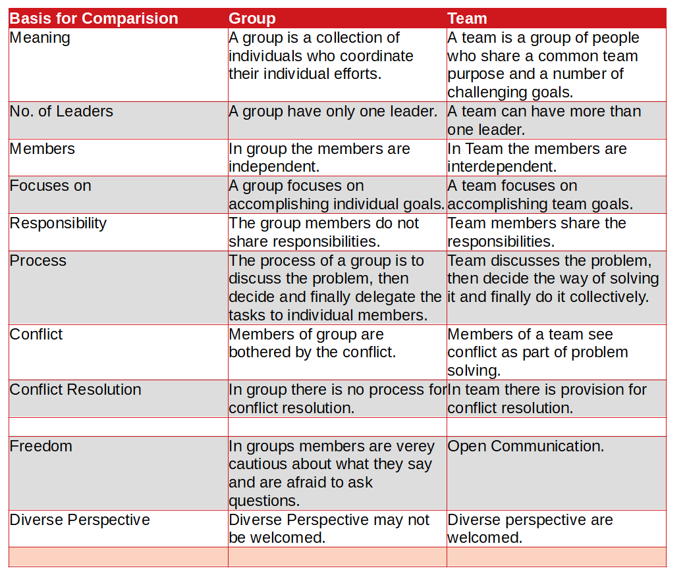

| Basis for Comparision | Group | Team |
| Meaning | A group is a collection of individuals who coordinate their individual efforts. | A team is a group of people who share a common team purpose and a number of challenging goals. |
| No. of Leaders | A group have only one leader. | A team can have … |
Difference Between Group and Team(Group vs Team)
